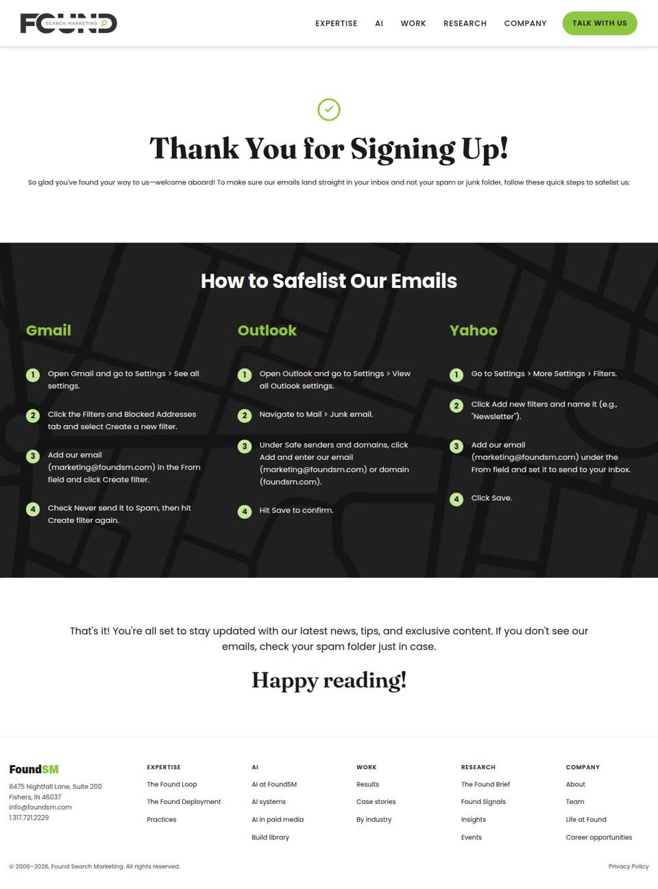
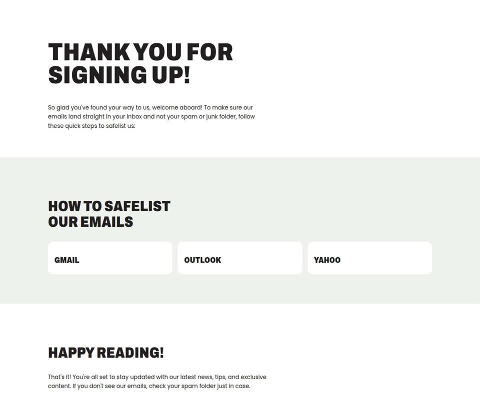
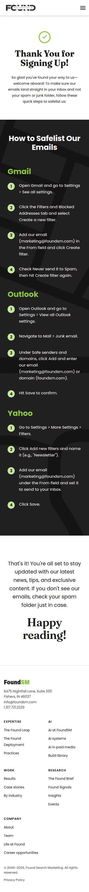
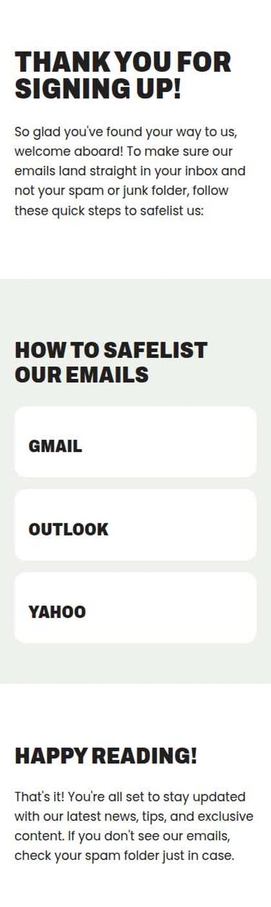

Utility · small




kept, reworded (em dash replaced with a comma)
Before: So glad you've found your way to us—welcome aboard! To make sure our emails land straight in your inbox and not your spam or junk folder, follow these quick steps to safelist us:
After: So glad you've found your way to us, welcome aboard! To make sure our emails land straight in your inbox and not your spam or junk folder, follow these quick steps to safelist us:
23 of 23 items kept. Reworded items are still on the page. Open the list to see each one.